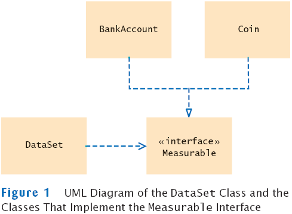

UML Diagram of DataSet and Related Classes
- Interfaces can reduce the coupling between classes
- UML notation:
- Interfaces are tagged with a "stereotype" indicator «interface»
- A dotted arrow with a triangular tip denotes the "is-a" relationship between a class and an interface
- A dotted line with an open v-shaped arrow tip denotes the "uses" relationship or dependency
- Note that DataSet is decoupled from BankAccount and Coin
